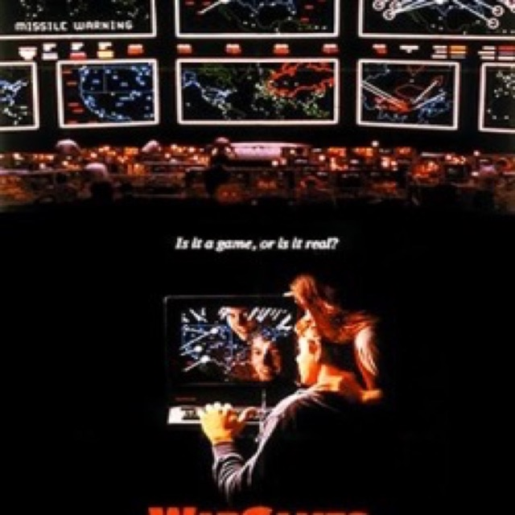
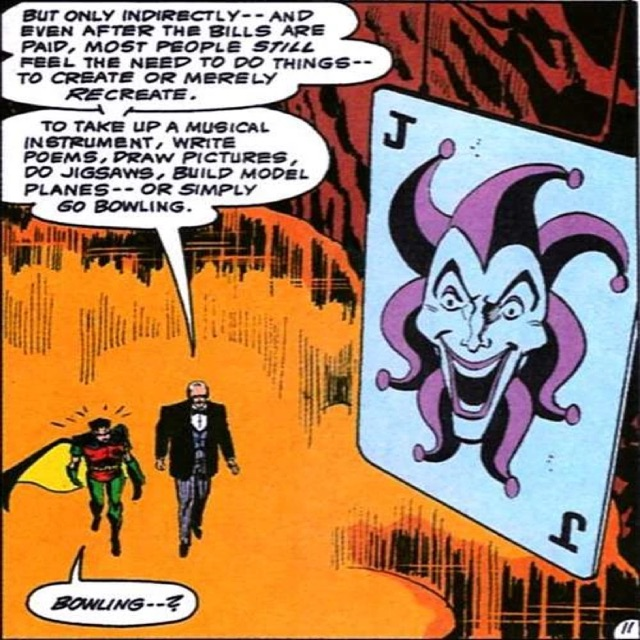

RICKPORTAL
12 toolscd ~/Desktop/tool_DC/RickPortal && ./RickPortal.command1MEESEEKS KEYLOGGERkeyloggercapture des frappes clavier, horodaté + fenêtre active2PORTAL SHELLreverse shellcontrôle total à distance, reconnexion auto 20 s3SCHWIFTYCRYPTransomwareAES-256-CBC, fichiers .morty, mode decrypt inclus4CLIP HIJACKclipboardespionne le presse-papiers, remplace adresses crypto5PLUMBUS WORMworm USBpropagation sur clés USB, autorun, fichiers cachés6CITADEL WORMworm LANpropagation réseau /24 via C$, creds faibles7INTERDIM SCREENSscreenspycaptures d'écran GDI périodiques en BMP8BLIPS & CHITZ CAMwebcamsnapshots webcam VFW périodiques9PORTAL DROPPERdropperURL XOR-obfusquée, download+exec caché+persistance0POOPYBUTTHOLE MICmicroenregistrement micro WAV 60 s en boucleccompile toutbuildcompile les 10 tools mac en un couppreplay portailanimationrejoue l'animation du portail vert
FLASH TOOL_SUPER
50 toolscd ~/Desktop/tool_DC/FlashToolSuper && python3 flash_tool.py1COMPILE KIT MACbuild des 10 tools macOS2COMPILE KIT WINDOWScross-compile les 10 exes PE3DROPPER MACgénère le .command auto-extractant4DROPPER WINDOWSgénère le vbs silencieux + zip5KEYLOGGER testcapteur de frappes local6REVERSE SHELL testshell sortant vers 127.0.0.1:44447SCHWIFTYCRYPT demoAES chiffre/déchiffre dossier leurre8USB WORM testpropagation sur volumes montés9SCREENSPY 5scaptures rapides pour test0NETTOYER MACHINEuninstall complet des agents1USERNAME HUNTpseudo sur 20 réseaux2WHOIS DOMAINEregistre + dates3DNS ENUMA/AAAA/MX/NS/TXT4SOUS-DOMAINEScertificats TLS → sous-domaines5GEOLOC IPville, ASN, orga d'une IP6REVERSE IPsites co-hébergés7HTTP HEADERStechnos exposées8EXIF METADATAGPS, appareil, dates9WAYBACKhistorique d'archive0PASTES/LEAKSrecherche sur sites de paste1PING SWEEP /24hôtes vivants du sous-réseau2PORT SCANscan TCP via nc3ARP TABLEvoisins réseau et MAC4CONNEXIONS ACTIVESnetstat complet5TRACEROUTEchemin vers une cible6WIFI AUTOURréseaux visibles, force, canal7MA TABLE WIFIréseaux mémorisés8IP PUBLIQUEton IP vue de l'extérieur9ROUTE TABLEpasserelles et routes0DNS LEAK TESTqui résout tes requêtes1PRANK PLEIN ÉCRANmessage invincible, combo secret pour sortir2FAKE BSODécran bleu factice plein écran3DROPPER MAC USBinstalle le kit via terminal tapé4DROPPER WINDOWSinstalle via powershell tapé5WIFI GRAB WINexporte les clés wifi sur clé USB6WALLPAPER SWAPchange le fond d'écran (prank)7MESSAGE SPAMMERpopups en boucle8HISTORIQUE NAVexfiltration des navigations1PAGE LOGIN DEMOpage de capture (lab autorisé)2TRACKER DE CLICSserveur qui logge IP/UA des clics3PRETEXTES EMAIL3 modèles d'emails d'ingénierie4PRETEXTES SMSmodèles smishing pour le lab5DORK GENERATORdorks ciblés sur un domaine1CLÉS WIFI MÉMORISÉESpassphrase des réseaux connus2PROCESSUSarbre des processus en cours3LAUNCHAGENTSpersistance présente4PORTES OUVERTESports en écoute locale5DISQUEusage des volumes6HISTORIQUE TERMINALdernières commandes7MATÉRIELmodèle, CPU, RAM, macOS

BATCAVE
31 toolscd ~/Desktop/tool_DC/BatCave && python3 bat_tool.py1ANALYSE EMAILheaders : IP source, relais, SPF2IMAGE FORENSIQUEhash, infos, recherche inverse3STÉGANO CACHERmessage secret dans un PNG4STÉGANO RÉVÉLERextraire le secret d'un PNG5DOSSIER DOMAINEwhois + DNS + MX en rapport6IDENTIFIER UN HASHtype + essais dictionnaire1COUTEAU SUISSE ENCbase64 / hex / rot132AES FICHIERchiffre/déchiffre via openssl3CASSE-MD5attaque dictionnaire md5/sha14GÉNÉRATEUR MDPmot de passe fort sur mesure5CHIFFRE CESARrot-N interactif6EMPREINTESchecksums sha2561TCPDUMP LIVEpaquets en direct (sudo)2HTTP URISURLs en clair sur port 803REJOUER UN PCAPanalyse d'une capture4VOISINS ARPqui est sur le réseau5GROS PARLEURSqui consomme le réseau1STATUS TORtor actif ? IP de sortie ?2INSTALLER TORbrew install + service3FETCH ONIONrécupérer une page .onion4MOTEURS D'OMBREliens de recherche leaks/ombres1BATARANG KNOCKport knocking sur une cible2SONAR RÉSEAUbalayage complet vivants + MAC3FUMIGÈNE MACusurper une adresse MAC4GRAPIN SSHconnexion ssh configurée5BATMOBILE SPEEDtest de débit réseau6BATSUITrapport machine complet1BAT-SIGNAL WEBsurveille un site, alerte au changement2PÉRIMÈTRE RÉSEAUalerte aux nouveaux appareils3VEILLE PORTSalerte si un port s'ouvre4JOURNAL D'ALERTESrelecture du journal
JOKER CHAOS
8 toolscd ~/Desktop/tool_DC/JokerChaos && python3 joker_tool.py1TEMPÊTE HAHAécran envahi de rires (Ctrl+C)2RIRE DU JOKERla machine rit à voix haute (say)3POPUP ORAGEdialogues en rafale4NOTIFICATIONSbombardement de notifications5PRANK PLEIN ÉCRANpage invincible, sortie: JOKER6FAKE UPDATEfausse mise à jour infinie7VOLUME MAXvolume à fond en boucle8WALLPAPER JOKEfond d'écran violet posé

TRIDENT AQUAMAN
8 toolscd ~/Desktop/tool_DC/TridentAquaman && python3 aquaman_tool.py1MARÉESdébit réseau graphique live RX/TX2PROFONDEURSlatence ping en graphique3TRIDENT WOLwake-on-lan réel (magic packet)4COURANTS DNSrequêtes DNS en direct5REEF PORTSports d'écoute par application6MARÉES ARPvoisinage réseau7ABYSS SCANscan profond de ports (threads)8MÉMOIRE DE MERusage données par interface

SUPERMAN
8 toolscd ~/Desktop/tool_DC/SupermanVision && python3 superman_tool.py1RAYONS-X DISQUEplus gros / cachés / récents fichiers2VISION THERMIQUECPU par process en direct3SOUFFLE GIVRANTgeler un processus (réversible)4SUPER-OUÏEcarte audio de la machine5KRYPTONITE DETECTORdétecte les IOCs des 20 kits6FORTERESSEcoffre chiffré AES d'un dossier7CHARGE SOLAIREbatterie et thermique8SUPER-VITESSErecherche instantanée de fichiers
CONSTANTINE
10 toolscd ~/Desktop/tool_DC/ConstantineDark && python3 constantine_tool.py1STATUS TORtor actif ? IP de sortie ?2INSTALLER TORbrew install + service3FETCH ONIONrécupérer une page .onion4DARK CRAWLERexplorer 1 niveau depuis une onion5RECHERCHE OMBREmoteur Ahmia → onions6ANNUAIREShidden wiki et fontaines7SIGNATURE OMBREsigner un message (RSA)8BTC LOOKUPsolde et transactions d'une adresse9MOTEUR DE FUITEemail/pseudo sur 4 sources0TRACE BRÛLÉEce que ta machine fuit en clair
LASSO VÉRITÉ
8 toolscd ~/Desktop/tool_DC/LassoVerite && python3 lasso_tool.py1VÉRITÉ FICHIERhash + comparaison de référence2VÉRITÉ TLScertificat : émetteur, validité3VÉRITÉ EMAILSPF/DKIM/DMARC d'un header4VÉRITÉ IMAGEGPS, appareil, empreinte5VÉRITÉ SITEHSTS/CSP : protections6VÉRITÉ URLdémêler les redirections7VÉRITÉ PERSONNEconsistance d'un pseudo8VÉRITÉ RÉSEAUDNSSEC : la zone signe-t-elle ?
CYBORG TECH
8 toolscd ~/Desktop/tool_DC/CyborgTech && python3 cyborg_tool.py1API STRIKEtester un endpoint REST2WEBHOOK FORGEserveur qui reçoit les webhooks3JSON X-RAYvalider + extraire du JSON4CRON FORGEplanifier des tâches (crontab)5PORT GUARDveille : action quand un port s'ouvre6TECH SCANrobots/sitemap/headers d'un site7AUTOMATONsurveille un dossier, agit au changement8NANO-REPAIRsanté du volume et du FS

LEXCORP
7 toolscd ~/Desktop/tool_DC/LexCorpIndustries && zsh verify_lex.zsh1LEX_INJECT_DLLinjectionVirtualAllocEx + CreateRemoteThread → LoadLibrary2LEX_HOLLOWprocess hollowingcréer suspendu, démapper, écrire son PE3LEX_APCAPC injectionshellcode dans un thread suspendu4LEX_RANSOM2ransomwareshadow copies supprimées + AES partiel + decrypt5LEX_SMB_WORMworm SMBsweep /24 + drop + tâche distante6LEX_CRYPTERcrypterpacker RC4 → loader généré, strings xorées7LEX_TEST_DLLpreuveDLL MessageBox à l'attach

S.T.A.R. LABS
5 toolscd ~/Desktop/tool_DC/STARLabs && python3 star_c2_server.py 80901DNS C2 SERVERDNS tunnelingcommandes dans les réponses DNS (testé live ✓)2DNS C2 AGENTagent DNSreçoit les commandes par DNS, exécute3C2 FRAMEWORKHTTP C2multi-agents, push par URL, jitter (testé ✓)4INFOSTEALERinfostealerscan 3 navigateurs, export RC4 chiffré5EVASIONanti-analysisPT_DENY_ATTACH + strings xor + exec mémoire W^X

TASK FORCE X
2 toolscd ~/Desktop/tool_DC/TaskForceX && python3 taskforce_ssh_worm.py
NEO / LA MATRICE
10 toolscd ~/Desktop/tool_DC/NeoMatrix && python3 neo_tool.py1SOURCE VISIONflux du système en direct2IMAGE RÉSIDUELLEta trace actuelle3CONSTRUCT LOADERpayload C2 paramétré généré4AGENT SMITH HUNTprocessus anormalement dupliqués5ZION UPLINKtest de liaison avec le C26THE KEYMAKERpaire RSA complète7TRACE DESTROYefface l'historique terminal8WHITE RABBITdémêler les redirections d'URL9THE ORACLEun message qui tombe juste0DEFENSIVE PROGRAMrapport défensif (pilule bleue)
LA FORCE
8 toolscd ~/Desktop/tool_DC/ForceGalaxy && python3 force_tool.py1HOLOCRONarchive totale de la machine2SITH INFILTRATORreverse shell via RickPortal3FORCE CHOKEfiger/libérer un processus4DROID SWEEPping + 5 ports sur chaque vivant5DEATH STAR TARGETINGtriple tir sur host:port6JEDI MIND TRICK3 prétextes paramétrés7KYBER CRYSTAL3 clés AES dérivées (PBKDF2)8BLASTER DEFLECTlecture + règles firewall pf

CATWOMAN
8 toolscd ~/Desktop/tool_DC/CatwomanVoleuse && python3 catwoman_tool.py1WIFI KEYSclés wifi du trousseau2BROWSER VAULThistorique/logins/cookies 3 navigateurs3KEYCHAIN AUDITobjets du trousseau système4SSH COLLECTORclés privées/publiques SSH5SECRETS SCANAPI keys/tokens dans les fichiers6SESSION THIEFexport cookies reimportable7DPAPI WINDOWSextracteur réel Chrome (CryptUnprotectData)8CLIP PREMIUMpresse-papiers + détection mots de passe

H.I.V.E.
8 toolscd ~/Desktop/tool_DC/HiveMining && python3 ruche_tool.py1POW MINERminage PoW réel SHA-256 (1,95 Mh/s vérifié)2XMRIG RÉELvrai miner Monero + config wallet/pool3CRYPTOJACKERpayload discret X% CPU + LaunchAgent4WALLET WATCHsoldes d'adresses BTC surveillées5MINER HUNTERdétecte les mineurs étrangers6PROFIT CALChashrate → revenu estimé BTC/EUR7BOT FACTORYscripts de déploiement par machine8COORDONNATEURdashboard flotte live (vérifié 3/3 ✓)

SCARECROW
6 toolscd ~/Desktop/tool_DC/ScarecrowPhish && python3 epouvanteur.py1MICROSOFT MIROIRphishing pixel-perfectle vrai login MS reflété, capture pendant la frappe2TRICK FORGE12 sitesgmail, facebook, instagram, twitter, linkedin, netflix, paypal, steam, github, snapchat, tiktok, outlook3LIEN PUBLICtunnel cloudflarelien utilisable de partout4CAPTURESharvestidentifiants + IP + UA → captures.json (testé ✓)5OEILviewervue live des captures (rafraîchi 1,5 s)6MIRROR PROXYmulti-domainesproxy inverse du vrai flux MS multi-étapes (v2)
WARWORLD
16 toolscd ~/Desktop/tool_DC/WarWorld && python3 warworld_cmd.py
LIGNE ROUGE
3 toolscd ~/Desktop/tool_DC/LeagueOfShadows && python3 league.py plan <nom> [site]
KRYPTONITE SUITE
4 toolscd ~/Desktop/tool_DC/KryptoniteSuite && python3 kryptonite.py scan
W.O.P.R.
4 toolscd ~/Desktop/tool_DC/WOPR && python3 wopr.py playTHE CALCULATOR
2 toolscd ~/Desktop/tool_DC/TheCalculator && python3 calculator.py serve 8094RAVEN
5 toolscd ~/Desktop/tool_DC/RavenEvasion && zsh verify_raven.zsh1SYSCALLS DIRECTHell's GateSSN depuis ntdll disque, stubs syscall en mémoire2UNHOOK NTDLLunhookingrestaure ntdll au code original Microsoft3ETW + AMSItélémétrieEtwEventWrite ← ret · AmsiScanBuffer ← CLEAN4SLEEP OBFUSCATIONmémoirepages chiffrées pendant le repos, RX à l'exécution5STACK SPOOFINGcall stackchaîne de retour remplacée par CreateFileA

THE THINKER
8 toolscd ~/Desktop/tool_DC/TheThinker && python3 thinker.py arsenal1analyzefichetype, headers r2, sections, imports, test UPX2stringsstringsURLs, IPs, chemins, mots chauds filtrés3importsimportsDLL/fonctions (PE via objdump) ou nm/otool (Mach-O)4unpackdépackdépacke UPX → .unpacked5r2radare2passthrough (aaa, afl, pdf main, iz…)6watchdynamiquefichiers ouverts d'un process en live7diffversioningdiff de strings entre 2 builds8arsenalréférenceGhidra (NSA), radare2, x64dbg, FLARE-VM, Capstone, IDA…

JOKER CARD
4 toolscd ~/Desktop/tool_DC/JokerCard && python3 joker_forge.py <c2>
DAILY PLANET
3 toolscd ~/Desktop/tool_DC/DailyPlanet && python3 veille.py serve 8088🕸️
BATWEB
8 toolsopen http://127.0.0.1:9000/app/forensics1FORENSICS EMAILforensics webheaders collés → verdict authentique/spoofé/suspect + carte des relais2STÉGANO STUDIOstégano studiocacher/révéler un message dans une image, glisser-déposer, mot de passe3CARTE RÉSEAUcarte réseauhôtes du wifi en graphe vivant, refresh 10s, alerte nouvel appareil4KRYPTONITE WEBweb scannerla machine vs les IOCs des 27 kits, scan en direct, verdict visuel5SENTINELLEsurveillancegardien permanent : wifi, ports, persistance, sessions, disque → push6WOPR WEBctf weblab CTF piloté du browser : cible :8090 + scoreboard :80917LAB D'ANALYSEanalyse malwareéchantillon déposé → inspecté statiquement (entropie, PE, strings) → verdict8L'ÉCOLEécole du malwareanatomie visuelle : keylogger, ransomware, C2, phishing → détection + contre-mesures